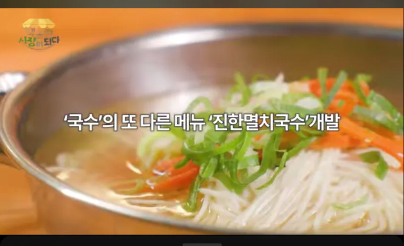

헉

헉
??
흉노멸치국수는 없냐
그것도 바로 개발 가능할듯
변한 마한 멸치국수도 개발을
오늘 흉노족 사냥간다
이분은 추가 라는 단어를 모르심?
내가 하면 개발
니가 하면 도발
뭔 ㅅㅂ 개발냥이 냐?
나도 오늘 개발했다 '연한멸치국수'
그런게 있어유? 가져와봐유
왜 어묵국수 아님
단무지국수도
변한건없니
휴~ 연한멸치국수 개발중이였는데 다행이다
개발에 왤케 집착하는거같지 조만간 백종원도 ai치트써서 종원냥이 되겠네
ai조차 위대하신 백대표님이 개발하신건데 어떤문제가 있다는 말임?
감사합니다 먹고 살게 해주셔서
부산가면 화명동 옆에 대동할매국수 ㄱㄱ 거기 멸치국수 개존맛임
엄청 찌인해서 개존맛 ㅇㅇ
우린 이걸 잔치국수라고 부르기로 했어요
멸치육수는 오래내면 맛이없다는걸 모르는 그분
나도 오래하면 좋은줄 알았는데 비려진대더라
잔치국수엔 어묵 넣어볼만 하지 않나?
난 음양멸치국수로 간다.
와 진한멸치국수 진짜 생각도못했다
이야 멸치육수를 왜 진하게 내릴 생각을 안했을까
야 진한멸치국수 대단하다 진짜
우린 그것도 잔치국수라 부르기로 약속했어요
마한멸치국수 변한멸치국수 는 없나?
ㅋㅋㅋㅋㅋㅋㅋㅋㅋㅋㅋㅋㅋㅋㅋㅋㅋㅋㅋㅋ
ㅋㅋㅋㅋㅋㅋㅋㅋㅋㅋ
계란말이에도 야채넣은걸 얘챼넣은계랜맬이 라고 이야기하며 개발했다 하지 아주 ㅋㅋㅋㅋ
'변한 건 없니~' 김연우 짤 밑에 넣어주지 ㄲㅂ
나도 하나 개발했다!!! (망한 멸치국수 )
백선생님 없었으면 평생 연한멸치국수,묽은멸치국수나 먹었을 것들이 은혜도 모르고 까고있네
국수에 멸치를 넣을 생각을 어떻게 했지? 와..
솔직히 그냥 그럼
한나라의 명맥이 아직 유지 되어있었구나
더 살아 무엇하리
사실 멸치도 백대표님이 개발하신거임
일본에 라멘 한그릇에 멸치 10마리인가 넣어서 육수내는거 있는데 그거 생각나네
ㅋ 난 어제 4분 50초까지만 끓인 짜파게티 개발했는데
원래 멸치국수는 있지 않음? 내가 다른 세계의 사람인가?
어묵 어디감
더진한 더찐한 더더진한 더더찐한
변한건 없니
오옷... 기존의 담백한 멸치국수의 단점을 마늘을 튀겨낸 쇠고기 기름으로 보완했어어어엇!! 우메에에에에엣!
라면빡빡이